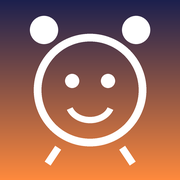

WakeFace
Rings louder and louder until it sees you awake.
- Add to Home Screen first: Share button → Add to Home Screen, then open WakeFace from there.
- Leave it open on this screen and plug your phone in. Don't lock the phone or switch apps; iPhone pauses web apps that aren't on screen.
- Turn your volume and brightness up before bed. A web app can't change them itself.
- Set a normal iPhone Clock alarm a few minutes later as a safety net.